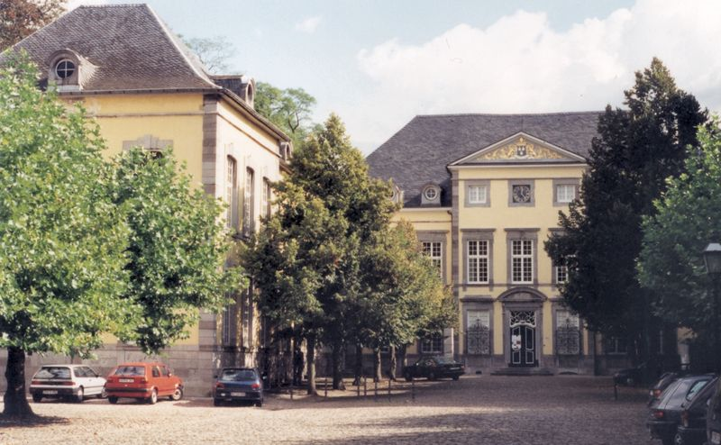

> nieuwsbrief
> 26e jg. - 4e trimester
2009
| Bijdragen over: |
Tip |
Mededelingen
Ontmoetingsdag Zannekin te Kornelimünster
De Zannekin-ontmoetingsdag
zal doorgaan op zaterdag 17 oktober te Kornelimünster nabij
Aken.
[De eerder aangekondigde bestemmingen Echternach en Vianden zullen
opgenomen
worden in het programma van een voorjaarse studie-uitstap].
 Abdij Kornelimünster
Practische
gegevens
Plaats
van de samenkomst: Gaststätte Zur Krone – Benediktusplatz
7 – D-52076 Aachen/Kornelimünster –
telefoon 00 49 2408 3466.
Dagindeling: Tussen 10.30 en 11.00 uur,
verwelkoming met koffie of thee in Zur Krone. Einde
tussen 16.30 en 17.00
uur met koffie en pruimenvlaai.
’s Middags, middagmaal met
plaatselijke Eifeler specialiteit (soep en hoofdgerecht).
Lezing en rondleiding doorheen
Kornelimünster met bezoek aan de proosdijkerk.
Gastsprekers: Dr. José CAJOT,
honorair
consul van Duitsland, geeft een lezing over de “Taaltoestanden
in de landen van Overmaas en het Akener gebied” en De
hr. Hermann WILMS,
gidst ons
doorheen de historische kern van Kornelimünster en in de proosdijkerk
Hoeveel
kost deze ontmoetingsdag? 25,00 €uro voor
Zannekin-leden / 30,00 €uro voor niet-leden. Hierin zijn begrepen:
morgenkoffie, middagmaal met drank, namiddagkoffie, gids en lezing.
Aanmelden
d.m.v. bijlage.
Beperkt
aantal plaatsen:
Opgelet! Wegens het beperkt aantal
plaatsen kunnen slechts de eerste dertig ingeschrevenen aan het
volledige
dagprogramma deelnemen. Wees er dus vlug bij!
Hoe
te bereiken? Met
de auto: autoweg tot Aken en vervolgens richting Monschau volgen.
Kornelimünster ligt op een tiental kilometer ten zuidoosten van Aken.
Met het openbaar vervoer: busmaatschappij ASEAG:
Informatie: ASEAG
Kunden-Center, Bushof, Peterstraße
17, 52062 Aachen
Telefoon 0241
1688-3040 Telefax 0241 1688-3041
Maandag-Vrijdag 7.30 - 18.00
uur Zaterdag 8.30 -14.00 uur
(Nederlands vroeger: Sint-Cornelis Munster) was een tot de Nederrijns-Westfaalse
Kreits behorend
abdijvorstendom binnen het Heilige Roomse Rijk.
Het is sinds 1972 het
zuid-oostelijke stadsdeel van Aken
onder de naam Kornelimünster/Walheim.
De
Benedictijnerabdij
werd kort na de dood van Karel de Grote
door zijn zoon Lodewijk de
Vrome gesticht op de plaats waar eerder een Romeinse tempel
stond.
Deze plaats in de buurt van Aken heette oorspronkelijk Inda, naar het
riviertje
de Inde
dat er langs liep. Het klooster werd in 817 ingewijd met als eerste abt
de
raadgever van de keizer: Benedictus van Aniane.
Het klooster Inda
werd in 881 door de Noormannen
verwoest.
Na
de wederopbouw groeide het klooster uit tot een Rijksabdij.
Er ontstond dan ook een territorium. Al bij de stichting was het land
'binnen
de omtrek van een uur gaans' aan de abdij toegewezen, het zogenaamde Münsterlandje.
Daarna komen ook de naburige heerlijkheden Gressenich en Eilendorf in
het bezit
van de abdij. Het abdijvorstdendom had het recht bij de koningkroning
in Aken
de nieuwe koning de kroningskerk binnen te leiden. Alleen edelen konden
monnik
worden en de hertog van Gulik was
voogd. In geestelijke zaken stonden
de monniken direct onder de paus.
De
door Karel de Kale
geschonken relikwieën
van de heilige paus Cornelius
trekken veel pelgrims en
daardoor wordt het klooster bekend onder de naam het "klooster van Sint
Cornelius". Deze nieuwe aanduiding verdrijft de oorspronkelijke naam
Inda.
Het
begin van de zestiende eeuw is nog een tijd van bloei, waarin nieuwe
gebouwen
tot stand komen, maar in de volgende tijd begint het verval. Met de
Franse
bezetting in 1797 komt er een eind aan de politieke zelf-standigheid
van de
abdij, maar de abdij zelf wordt pas in 1802 opgeheven. De
kloostergebouwen gaan
in particulier bezit over met uitzondering van de kloosterkerk die aan
de
parochie komt. Na de nederlagen van Napoleon
wordt het gebied in 1815
door het Congres van
Wenen aan het koninkrijk Pruisen
toegekend. Bron:
Wikipedia, de vrije encyclopedie
Roubaix, ’t was maar een vraag…
G.
Callebaut,
Tienen
De beweringen die ik in het artikeltje Robeke moét hebben bestaan (Nieuwsbrief 2009/1)
heb ingebracht tegen
een Roubaix-artikel van de heer G. Vandevyvere, hebben een antwoord van
hem
uitgelokt in onze daaropvolgende Nieuwsbrief.
Volstrekt niet ter zake. Ik zou hem op sofistische en sentimentele
redenaties met de trucs van religieronselaars hebben “neergesabeld”. En
zonder
enige precisering zit me dat te ver. Zulke handelswijze kan geen “sluit
ik
hierbij de discussie” motiveren. Net dàt zijn redenatietrucs.
Op enige stijlaanvoeling voor mijn
uitdagende
hyperbool-titel heb ik niet moeten rekenen. Met de botte bijl hakt mijn
opponent erop in, om reeds in mijn aanvangswoorden het oeroude sofisme
juichend
op het hele betoog te kunnen overdragen. Waar hij me verwijt dat ik
“hier en
daar een zin” heb genomen en “die twee dan bijeenbrengen” ging, vernam
ik niet
om welke zinnen dat ging en al helemaal niet waarom ze niet mochten
samengebracht. Voorts zie ik niet in waarom bij plaatsnaamattestaties
de
scriptoria geen aandacht zouden mogen en moeten krijgen. Dat zoiets
“naar
(zijn) bescheiden mening” weinig ter zake doet, betekent nog niet dat
zijn
mening zonder bewijzen als gewettigd zou moeten worden aangezien om
iets te
weerleggen.
Ik zou mijn opponent verwijten dat hij over
“Robeke
een vraag zou hebben gesteld. Kom
nou, hij heeft helemaal géén “vraag” gesteld, hij boodt een duidelijke
eindbeslissing, tot en met de Franse uitspraak die in acht zou moeten
worden
genomen, om zelfs in geen Westvlaamse “-baai” te stranden! Ten onrechte
vermeldt mijn opponent dat hij geen “terechte” vraag mocht stellen. Hij
stelde
zelfs geen onterechte.
Heel het gedaas over “terugkeer naar het
stenen
tijdperk”, “sentimentele gevoelsgeladen argumenten”, “voor eeuwig
vaststaande”
of “vastgeroeste (?) Vlaamse benen”, waartegen hij zeer
“onwetenschappelijk”
niet schoppen mocht”, dat kan ik moeilijk als tegenargumenten
beschouwen.
Aangezien mijn opponent het niet over
Rijsel heeft
gehad, zou ik het er volgens hem niet mogen bij betrekken. Ik heb
overigens wel
stipt aangegeven in welk verband ik dat deed. En dat het voor hem “een
héél
ander geval” is, doet daar, zonder nadere precisering, niets aan af.
Met grote
“vraagtekens” overigens bij wat hij in petto houdt!
Er is één concrete verwijzing in zijn
tekst. Naar
internetlijsten. Zonder vermelding van het aantal toetsingen heet het
daar: “niemand in de Westhoek zegt Robeke, …
maar wel GEWOON ‘Roebei’” en mijn opponent meent dat niet “zonder
commentaar”
te kunnen citeren. “Wetenschappelijk” klaarblijkelijk. Wat mij betreft,
ook
“zonder commen-taar”. Alleen dit: dat bewijst alleen de graad van de
eeuwenlange Franse cultuurdwang, maar niets anders.
Als een niet genummerd “tweede verwijt”,
met een
aanhef “En nu komt het”, wraakt mijn opponent het feit dat ik een
citaat van
hem “de stad met zijn Franse vorm…” heb versierd met een (sic) tussen
“zijn“ en
”Franse”. Hij acht dat een aanslag op het Algemeen Nederlands en hij
wordt
daardoor “in een keurslijf gestopt”… In het Algemeen Nederlands is de
regeling
voor het woordgeslacht afgedaan. Alleszins kan het niet zo zijn, dat
wie de
genusaanvoeling merendeels nog heeft, ze zou moeten prijsgeven om
zogenaamd het
Algemeen Nederlands te dienen. We zakken trouwens, zeker voor lands- en
stadsnamen, nog steeds verder af in de geslachtsverwarring. Tot
“Amsterdam haar
expansie” toe, naast “Vlaanderen haar regering” zelfs van een
minister-president… Na het “hij-en” de “be-haar-ing”. We glijden te ver
af om
er met enige modieusheidszin aan mee te
doen. Zo denk ik. En als ik citeer, plaats ik “sics” in zulke gevallen,
opdat
men mij er niet van zou kunnen verdenken een aandeel te hebben in dat
gedoe.
Aanstellerigheid in dat opzicht heeft voor de doordringing van onze
cultuurtaal
in het Zuiden zelfs een contraproductieve uitwerking. Waarom het voor
mij zo
ergerlijk overkomt. Mijn opponent moet dat verzonnen “verwijt” niet
aandragen
als onderdeel van mijn betoog dat hij op groeneboekjesgrond zou
weerlegd hebben
en waarmee hij een discussie over een totaal ander onderwerp voor
gesloten zou
kunnen verklaren. Dat is in se onmogelijk. Dus ook voor hem.
Willy Alenus, Oostende
Schrijven over De “Nederlanden
Extra Muros”, dat is de bestaansreden en de doelstelling van de
Stichting/Vereniging Zannekin.
In
de praktijk gaat onze voorkeur uit, zeker als studieobject, naar
Zuid-Vlaanderen, Zuid- Henegouwen en Artesië, d.z. de door Frankrijk in
de
tweede helft van de zeventiende eeuw veroverde voormalige Nederlandse
gewesten.2
Maar onze belangstelling gaat
ook vaak uit naar hun tegenhangers, de historisch niet-
Nederlanden, Loon en Luik, wier geschiedenis zo intiem met
die van de Zeventien Provinciën is verweven, dat men soms geneigd is ze
als de
achttiende en negentiende gouwen te bestempelen.
Over de wederwaardigheden, in
de vijftiende eeuw,van dat graafschap Loon en dat prinsbisdom Luik, die
sedert
1366 3 een “doppel-Fürstentum” waren geworden van het heiliges römisches Reich deutscher Nation,
handelt het lijvige boek van onze markies-historicus en net zoals wij
is hij
zelf ook principautaire van origine.4
Met de bijnaam “le Lis” (de
lelie, d.i. tot de Franse revolutie, het embleem van Frankrijk, wordt
bedoeld
koning Lodewijk XI (1423–1461-1483) en met “le Sanglier” (het
everzwijn),
Willem I van der Marck-van Arenberg.
WILLEM, heer van
Lummen, († Maastricht,
18 juni 1485), kleinzoon van Engelbert
II en van Mathilde van Arenberg en jongste zoon van Everhard II van
Arenbeerg
en Maria van Loon, vrouwe van Lummen, belegerde in 1467 de Luikse
prins-bisschop Lodewijk van Bourbon (1438–1482) te Hoei. Daarna
onderwierp hij
zich aan Karel de Stoute, doch stond tegelijkertijd met diens vijand,
Lodewijk
XI van Frankrijk, bijgenaamd l’arraignée, in verbinding. Na de dood van
Karel
de Stoute (Nancy, 1477), zocht Lodewijk van Bourbon toenadering tot
Willem van
der Mark, gaf hem zijn goederen terug en erkende hem als heer van
Seraing-le-Château (bij Hoei). Willems aanspraken gingen echter nog
veel
verder. De bisschop verbande hem in
(Wat hierboven cursief wordt
afgedrukt weerspiegelt, in grote lijnen, de verkorte biografie van
Willem I van
der Marck, zoals die is terug te vinden in de meest geraadpleegde
naslagwerken.
Enkele misvattingen, werden weggewerkt.)
Wat nu volgt is geen kritiek
in de negatieve zin van het woord, maar voor de Trazegnies is Willem I
van der
Marck een Ardennees, terwijl hij voor ons, en in de eerste plaats heer
van
Lummen was. Vandaag zijn de wapenschilden van de families van Arenberg
en van
der Marck nog altijd terug te vinden, niet alleen in het blazoen van de
gemeente Lummen, maar tegelijkertijd ook nog in dat van Herk-de-Stad,
omwille
van de deelgemeente Schulen, die vroeger bij Lummen hoorde.
Wij
nemen aan dat Everhard II, de jongste zoon van Engelbert II en Mathilde
van
Arenberg, de eerste heer van Lummen was en dit ingevolge zijn huwelijk
met Maria
van Loon, dame van Lummen en Neufchâteau. Hun jongste zoon was
de
beruchte Willem I "metten baerde" (getrouwd met Johanna van
Schoonhoven), die vaak naar het voorbeeld van vader en oudste broer,
"le
sanglier des Ardennes" wordt genoemd.5 Wijlen prof. J.
Stinissen heeft daar in zijn bekende werken op gewezen.
Spijtig
genoeg maakt Winkler Prins in zijn Encarta
digitale biografie van Willem
metten baerde twee grote fouten. Willem was niet de kleinzoon van
Everhard II,
maar wel de kleinzoon van diens ouders Engelbert II en Mathilde van
Arenberg.6
Ook
Olivier markies van Trazegnies, die de misschien oudste burcht van
België
bewoont in Corroy-le-Château, noemt Willem I van der Marck, bijgenaamd
Willem
metten baerde, "het everzwijn der Ardennen", in zijn aan deze
kandidaat “prins van Luik” gewijd boek dat, misschien voorlopig,
uitsluitend in
de Franse taal op de markt werd gebracht.
Het
is een kanjer van een boek van meer dan 600 pp. met een mooie,
glanzende cover,
gedrukt op gewoon papier, maar met een voor visueel gehandicapten
vriendelijk
lettertype. Wat ons tot nu toe het meest imponeerde is Trazegnies’
taalgebruik,
d.i. het Frans van de Franstalige professoren en juristen, van een
halve eeuw
geleden, toen die nog, traditiegetrouw, aan de Parijse Sorbonne wat
vandaag een
post graduate heet, alsnog gingen
toevoegen aan hun curriculum vitae.
Burgeroorlog in het
Prinsbisdom Luik
Reeds
in oktober 2001 hebben wij een artikel gewijd aan Willem I van der
Marck en de
gruwelijke vijftiende eeuw, wier oorlogsmisdadigheid voor een groot
deel te
wijten was aan de strijd om het bezit van het kerkelijke, niet
erfelijke vorstendom
Luik, met inbegrip van het graafschap Loon. Net zoals de zuidelijke
Nederlanden, in de praktijk bijna duizend jaar lang, zo waren toen ook
Loon en
Luik de inzet van de strijd om de macht in het West- Europa van na de
Honderdjarige Oorlog (1337–1453), tussen Frankrijk, Bourgondië, de
Rooms-Duitse
keizer en mindere goden. De Engelse kandidaat-koningen, de Yorks en de
Lancasters, konden zich wel zoet houden met de Rozenoorlogen
(1455–1487). Maar
Willem I van der Marck, in alle opzichten een condottiere,
probeerde zijn eigen koers te varen. Ten bate van zijn
geslacht.
Alhoewel
bij ons weten geen enkele geschiedschrijver het vermeldt, is het reilen
en
zeilen van de familie van der Marck-van Arenberg en inzonderheid die
van Willem
I van der Marck (overgrootvader van Willem II, bijgenaamd "Lumey"),
best te vergelijken met dat van Cesare Borgia (1475–1507), zoon van
paus
Alexander VI (1430–1503).
Beiden
probeerden de geestelijke macht van hun vaderland, de ene Luik, de
andere Rome,
om te smeden tot een wereldlijke macht, die dan uiteraard te hunnen
voordele
ook erfelijk zou zijn. Willem I "metten baerde" ging hierbij het
verst, hij zette zijn zoon, Jan I (†1519), op de prinselijke troon van
Luik,
die het daar ongeveer een jaar kon volhouden. Zie infra.
Sedert 1467, het jaar van de slag
bij Brustem, waar de Luikse en Loonse troepen werden verslagen door het
leger
van Karel de Stoute, was Willem beginnen te intrigeren tegen de toenmalige prins-bisschop Lodewijk van Bourbon
(1438–1482). In 1480 en 1481 hadden er reeds schermutselingen
plaatsgehad
tussen de aanhangers van Willem van der Marck en die van de
prins-bisschop. In
1482 kwam Willem openlijk in opstand. In augustus van dat jaar trok hij
met een
leger van 1200 ruiters, een heus eskadron, en van 3000 man voetvolk op
tegen de
hoofdstad Luik.
Op 24 augustus stond hij voor de stad en ’s anderendaags
had
de aanval plaats. De prins-bisschop, die zich buiten de stad had
gewaagd om de
situatie te over schouwen, werd onverwacht door vijandelijke soldaten
omringd.
Meerdere zwaardsteken kreeg hij te incasseren, zodat hij van zijn paard
viel.
Willem van der Marck, die misschien toevallig in de buurt was, zou op
zijn
verslagen vijand zijn gesprongen en hem eigenhandig de keel hebben
overgesneden. Ten slotte werd zijn lijk, samen met dat van andere
ridders, in
een bijriviertje van de Maas gesmeten. Het prins-bisschoppelijke leger
sloeg op
de vlucht en Willem trok als overwinnaar de stad binnen. Hij maakte
zich
meester van de macht en deed zelfs enkele dagen later zijn zoon Jan8
door Kanunniken, die in Luik gebleven waren, tot prins-bisschop
verkiezen.
Die verkiezing was om verschillende redenen ongeldig,
vooral
omdat de aartsbisschop van Keulen de inwoners van de stad Luik in de
ban der
kerk geslagen had. De kanunniken, die uitgeweken waren, vergaderden in
oktober
te Leuven, waar ze te kiezen hadden tussen Jan van Horne en Jaak de Croÿ als prins-bisschop van Luik. De
stemmen waren over de twee kandidaten verdeeld, maar op 16 oktober
bekwam Jan
van Horn de meerderheid. Hij verzocht de paus om de goedkeuring van
zijn
verkiezing. Maar ook Jaak de Croÿ en natuurlijk ook Jan I van der Marck
deden
hetzelfde.
De dubbele adelaar
mengt zich in de strijd 9
Maximiliaan van Oostenrijk (1459–1519), door zijn
huwelijk
met Maria van Bourgondië hertog van Brabant geworden, die steeds goed
bevriend
was geweest met Lodewijk van Bourbon en die anderzijds oorlog voerde
tegen de
koning van Frankrijk, trof, onmiddellijk na de moord op de
prins-bisschop,
maatregelen om zijn hertogdom te beveiligen tegen gebeurlijke aanvallen
van
Willem van der Marck, die voor 1/4e van de heerlijkheid Lummen zijn
leenman
was.
Zo liet hij de Luikse stad Sint-Truiden door een
legermacht
bezetten. Alhoewel die uitsluitend tot opdracht had de Franse
huurlingen, in dienst
van Willem van der Marck te bestrijden - de gelegenheid maakt de dief
-toch
ondernam zij strooptochten in het graafschap Loon. Op 11 of 12
september werd
de stad Loon bezet, op 13 september werd Hasselt veroverd. Dat kostte
het
Hasseltse garnizoen 600 à 700 doden, - de overige manschappen werden
gevangen
genomen. Gewoontegetrouw werden noch vrouwen, noch kinderen door de
veroveraars
gespaard.
Waarschijnlijk werd diezelfde dag ook Herk-de-Stad
ingenomen. Een kroniekschrijver voegt eraan toe dat in Herk de
veroveraars
hetzelfde deden als in Hasselt. Bovendien moesten beide steden de
verbintenis
aangaan hun vestingmuren af te breken en hun grachten te dempen.
Daaraan werd
nochtans geen gevolg gegeven. Intussen woedde de strijd voort tussen
het Brabantse
leger en de troepen van Willem van der Marck, zij het met wisselende
kansen. In
de twee laatste maanden van 1482 werden Hasselt en Tongeren (ook een
Luikse
stad), door van der Marck heroverd. Maar op 13 juni 1483 leed hij een
zware
nederlaag te Hollogne a/d Jeker.
Toen de Brabantse staten dat nieuws vernamen droegen ze
aan
de schout en schepenen van Halen op (die stad was toen nog Brabants) de
stad
Herk plat te branden, omdat ze de verbintenis van september niet was
nagekomen. Enkele dagen later staken
Brabantse
soldaten Herk in brand, alsook de kerk van Alken, waarin Luikse
soldaten een
toevlucht hadden gezocht.
De nederlaag van Hollogne ten spijt gaf Willem van der
Marck
de strijd niet op, totdat hertog Maximiliaan het beleg sloeg voor de
stad Hoei,
die persoonlijk verdedigd werd door Willem van der Marck en door zijn
broer
Everhard III. Het leidde tot een wapenstilstand op 6 april en tot een
vredesverdrag op 10 april 1483. De voornaamste bepaling, waartoe de
twee
partijen zich verbonden, was de erkenning als prins-bisschop van de
kandidaat,
wiens verkiezing door de paus zou bekrachtigd worden.
Met een bulle van 17 december 1483 wees de paus de
bisschoppelijke zetel van Luik toe aan Jan van Horne. Een harde klap
voor
Willem van der Marck. Ogenschijnlijk onderwierp hij zich aan het gezag
van de
nieuwe prins-bisschop. Maar hij ging verder met intrigeren. Sommige
auteurs
schrijven dat hij plannen had om Jan van Horne te doen afzetten of te
vermoorden om zijn zoon Jan I op de bisschoppelijke zetel te
installeren. Jan
van Horne zou gevoeld hebben dat de openlijke vriendschap van Willem
van der
Marck niet meer dan schone schijn was.
Het moet ons dan ook niet verwonderen dat hij naar een
middel zocht om zich van zo een gevaarlijke concurrent te ontdoen. Op
die manier
speelde hij in de geopolitieke kaarten van keizer Maximiliaan, die
natuurlijk
al lang had begrepen dat Willem metten baerde ongeveer dezelfde plannen
had als
de Borgia’s in Italië, d.i. van een kerkelijke een wereldlijke,
erfelijke staat
te maken, die niet noodzakelijk de status van leenman en ondergeschikte
van de
keurvorst en aartsbisschop van Keulen zou aanvaarden zoals de
prins-bisschop
van Luik dat altijd had gedaan.10
Willems einde in
zijn Loonse moederland
Er werd een listig plan op stapel gezet om van der Marck
in
een hinderlaag te lokken. Men maakte van de gelegenheid gebruik dat er
op 17
juni
Die krijgslist zat goed in mekaar. Op die wijze werd
Willem
van zijn lijfwacht en van zijn vrienden gescheiden, “en bevond hij zich
tevens
op Brabants grondgebied”, dat zeggen sommige kronieken. Opnieuw durven
wij dat
betwijfelen. Halmaal was niet Brabants en tot 1963
(taalgrens-wetgeving),
behoorde de streek van Landen tot de provincie Luik. Laat het ons dus
houden
bij Brustem. Daar werd Willem, voor hem onverwacht, van zijn paard op
de grond
geworpen en vervolgens geboeid en tijdens de daaropvolgende nacht naar
Maastricht gevoerd. De beschrijving, in detail,
van deze episode, door de Trazegnies, schijnt zo te zijn
weggelopen uit Le Capitaine
Fracasse van Théophile Gauthier. ’s
Anderendaags ‘s ochtends, bij het krieken van de dag, werd Willem
metten baerde,
door de Brabantse schepenrechtbank ter dood veroordeeld en onmiddellijk
daarna
op het Vrijthof onthoofd, terwijl hijzelf zijn baard zou hebben omhoog
gehouden.
“Cette tête saignera longtemps”, zouden zijn laatste woorden zijn
geweest. Met
deze voorspelling heeft hij zich niet vergist.12
De Herkse vrijetijdshistoricus, wijlen apotheker
Raymond Enckels (1892–1968) heeft, met de grondigheid die hem eigen
was, de vijftiende
eeuwse registers van Herk opgezocht en daarin nagetrokken wat er terug
te
vinden is ter zake de bloedige gebeurtenissen met betrekking tot de
burgeroorlog, zoals die hierboven worden beschreven. In de eerste index
van de
Gichtenregisters van de Herkse schepenbank, las hij het volgende (p.
30).13
“Na de dood van onze genadige bisschop en prins van Luik,
Ludovicus van Bourbon, die door Willem van Arenberg vermoord werd,
kozen
(enkele kanunniken) Jan van Arenberg, de zoon van Willem, tot bisschop.
Maar de
meeste (kanunniken) kozen tot bisschop Jacobus van Croÿ, de zoon van de
hertog
van Croÿ, en Joannes Hermanus, de zoon van de graaf van Horne. Daar de
twee
eersten door een vonnis van de Paus uitgeschakeld werden en hun
benoeming
afgekeurd, heeft Willem I van
Arenberg een zware burgerlijke oorlog
ontketend tegen Jan van Horne en tegen ons land. Hij oefende een grote
dwingelandij uit. Zo is ons land in grote partijschap en onenigheid
vervallen,
ja zo groot, dat alle steden en dorpen in twee partijen gescheurd
werden. Zelfs
de families werden tweedrachtig. Zo is het gebeurd dat in Herk ook twee
partijen waren en dat de sterkste partij de tegenpartij heeft doen
vluchten tot
in de kerk. Dan heeft ze de kerk in brand gestoken en haar
tegenstrevers levend
verbrand. Dat is gebeurd in ’t jaar 1483. Aan de heropbouw van de kerk
werd
begonnen in
Zoals de lezer reeds heeft opgemerkt valt er hier en daar
wel een tegenstrijdigheid te bespeuren tussen hetgeen de algemene
geschiedenis
weergeeft en de meer dan vijfhonderd jaar oude aantekeningen die werden
teruggevonden in een Gichten-register van Herk. Volgens de algemene
geschiedenis hebben de Brabantse soldaten Herk in brand gestoken.
Volgens de
aantekeningen in het register van de schepenbank zijn het de Herkenaren
zelf
geweest. Hoe alles precies in zijn werk is gegaan, meer dan een half
millenium
geleden, valt niet meer met enige preciesheid te achterhalen. Om te
trachten de
twee versies, de algemene en de plaatselijke, in overeen-stemming te
brengen,
zou men kunnen aannemen dat de Herkenaren bij het naderen van de
Brabantse
soldaten de kerk in brand hebben gestoken. Met de Brabants gezinde
partij in de
kerk opgesloten? En dat de Brabanders daarna de huizen in vlammen
hebben doen
opgaan om hun gruwelijk vermoorde partijgenoten te wreken? Maar deze
veronderstelde gang van zaken lijkt verdacht veel op de versie van
oorlogsmisdaden die werden gepleegd tijdens de Tweede Wereldoorlog,
zoals die
werden opgetekend door de oorlogsmisdadigers zelf (bvb. Oradour-sur-
Glane, 10
juni 1944).14
Trouwens hout snijdt deze “verklaring” zeker niet. Waarom
zouden de Herkenaren hun eigen kerk in brand hebben gestoken? Ze hadden
ze
immers nodig, niet alleen voor de eredienst, maar vooral tactisch
gezien, als
uitkijkpost in een tijd zonder hoge gebouwen. En de godsdienstoorlogen
zouden
(gelukkig maar), nog tachtig jaar op zich laten wachten, totdat de haat
van
mekaars geloof voldoende zou zijn om mekaars heiligdommen te verwoesten
en
mekaar over de kling te jagen. En tijdens de gevechten van de Tweede
Wereldoorlog werden meerdere van onze kerken ook weer in brand
gestoken,
uitgerekend indien de tegenstrever ze gebruikte of kon gebruiken als
uitkijktoren om de troepenbewegingen van de tegenstrever vanuit de
hoogte te
volgen, te controleren en te dwarsbomen.
Wie tot nu toe heeft gelezen
wat wij hier hebben geschreven, tot en met de gruwel van de
Loons-Luikse
burgeroorlog, met de klemtoon op een typische Loonse stad, -
Herk-de-Stad - zal
eerst en vooral reeds hebben begrepen dat men in de vijftiende eeuw
geen burger
van Neufchâteau hoefde te zijn en ook niet van Liège of Sedan, om zich
met hart
en ziel betrokken te hebben gevoeld bij het bloedige gebeuren. Hij of
zij zal,
net zoals wij, de indruk hebben dat, hoe dichter men bij de
heerlijkheid Lummen
kwam, hoe groter het engagement van de burgers was. Omgekeerd volstaat
het om
het “Avant- propos” te lezen van Michel Foret, gouverneur van de
provincie Luik15
om het bewijs te hebben dat dit bewustzijn ontbreekt, bezuiden de
taalgrens van
8 november 1962.
Bij ons weten heeft in
Vlaanderen maar één weekblad,dat zichzelf “Vlaamsgezind” noemt, een
lezenswaardige recensie aan het boek van de Trazegnies gewijd. Maar ook
in deze
positieve kritiek wordt de heer van Lummen, zonder schroom ”Guillaume”
genoemd.
Daar waar o.a. de Luikse historicus Jules baron de Chestret de Haneffe,
er de
nadruk op legt dat de zoon van Maria van Loon, vrouwe van Lummen, in
zijn
moederland, als “Willem metten baerde” was bekend en later berucht.
Toch merkwaardig dat de drie
Nederduytschtalige, maar Luikse schepen-banken, die op 17 juni 1485,
allemaal
in de buurt van het complot-gebeuren lagen (Sint-Truiden, Tongeren,
Maastricht), niet eens werden uitgenodigd Willem te veroordelen, dus
kon dat niet
naar Luiks recht of vertrouwde men het niet, voor de moord op
prins-bisschop
Lodewijk van Bourbon. Laat ons even stilstaan. Werd er niet, in
Limburg, in de
kerkelijke litanie, tot in de twintigste eeuw gebeden: “van de
Brabanders,
verlos ons heer”? Die van Gaasbeek en Halen waren voor Loon de gesel
Gods
geweest.
En hier zijn we weer bij het
oude zeer. Over het “Oude Land van Loon” wordt er al tweehonderd jaar
lang veel
geschreven, maar tot en met de Tweede Wereldoorlog, vaak door Luikse
historici
(kanunnik Joseph Daris, Simenon, Henri Pirenne, E. Poncelet) en door in
het
Frans schrijvende Vlamingen (de Borman, de Corswarem, Bamps,Van Neuss).
Het
resultaat van deze soms eenzijdige belichting, kan allicht gedeeltelijk
worden
bijgestuurd. Kennelijk zijn wij daar al mee bezig. Bijzondere aandacht
moet
worden besteed aan het werk van “hineininterpretierende”
historici, van wie collega Jacques Bainville zegt: “qu’ils prennent
l’effet
pour la cause”.16
Er wacht de huidige en
aankomende generatie Zuid-Nederlandse beroeps- en vrijetijdshistorici
een
bijzondere taak. In de Franse Nederlanden (Artesië, Zuid-Vlaanderen,
Zuid-Hengeouwen), zijn “groot-Nederlanders” daar, ondanks alle
obstakels er al
mee begonnen, weliswaar en noodgedwongen in de Franse taal.17
Maar niet alleen in
Belgisch-Limburg zal heel wat van wat er ooit geschreven werd moeten
herschreven worden. In de eerste plaats om er de nadruk op te leggen
dat het
graafschap Loon, ook nog na de naasting in 1366, toen het samen met het
prinsdom Luik, een “doppel-Fürstentum” was geworden, geen vazalstaat
was en dat
de Loonse standen geen tweede-rangsburgers waren in het
gemeenschappelijke
prinsbisdom Luik. Het aantal en de eerstaanwezendheid van de Lonenaren,
die
door de eeuwen heen in prinsbisschoppelijke staatsdienst waren, lijkt
ons
indrukwekkend.
Maar ook ter zake Maastricht
zal er een inspanning moeten worden geleverd, om de “schade” te
herstellen die
werd aangericht door de “Hol-landse” geschiedschrijving, die niet moet
onderdoen voor sommige misvat-tingen die werden verspreid door de
Belgische
geschiedschrijving. Tot 1796, het begin van de Franse tijd, was de oude
Maasstede een half Brabantse, half Luikse stad, een condominium. Een
status
waarvan de beide ingangen van het Maastrichtse stadhuis vandaag nog
getuigen.
De half Brabantse rechts-positie van Maastricht heeft “den baerde” zijn
kop
gekost.
Wie nog Frans heeft geleerd
volgens het oude programma, zal Olivier de Trazegnies lezen met een
vleugje
nostalgie. Toch zijn sommige Franse critici van oordeel dat met 300
bladzijden
evenveel had kunnen worden gezegd dan met 600? Maar wie zijn die
Fransen, die
vaak niet weten dat Valenciennes,
Olivier de Trazegnies heeft
o.i. misschien de fout gemaakt die wij allemaal wel eens maken, maar
dan wel
niet met een werk van dit kaliber. Die fout bestaat erin het werk niet
te
hebben laten nalezen door een “don”, zoals die profs in het Engelse
vakjargon
worden genoemd. Maar het komt uiteraard de mediëvisten zelf toe die
vraag
alsnog te beantwoorden. Er wordt met belangstelling
uitgekeken naar hun reactie.
P.S.
Le Lis
et le Sanglier, De Lelie en het Everzwijn. Het zal de lezer zijn
opgevallen dat wij deze
bijnamen toekennen aan andere hoogheden dan die van de auteur. Voor
Olivier de
Trazegnies is “Le Lis” prins-bisschop Lodewijk van Bourbon (1438-1482)
en “Le
Sanglier” is Willem I van der Marck (†1485), heer van Lummen en
Neufchâteau.
Maar Lodewijk van Bourbon was de man van de Bourgondiërs (Filips de
Goede), die
streefden naar het herstel van het Middenrijk (843-870). “La Croix de
Lorraine” ware voor
hen een beter blazoen geweest. Ons baserend op de meest gezaghebbende
bronnen,
reserveren wij de bijnaam “Le Sanglier” voor Everhard II, vader van
Willem I
van der Marck, voor Everhard III, zijn oudste broer en voor Robert II,
heer van
Sedan en Bouillon, zijn neefje. “Le Lis”, zijnde het antieke symbool
van
Frankrijk, tot 1789, is dat het blazoen van de Franse koning, hier in
casu,
Lodewijk XI, (1423–1483), bijgenaamd “l’universelle arraignée”. De
officiële
“Liste des évêques de Tongres, Maastricht et Liège” , toont ons geen
blazoen
ten name van Lodewijk van Bourbon.
Noten
1 Olivier
(marquis) de TRAZEGNIES, Le
Lis et le Sanglier, L'Histoire
fascinante du Sanglier des Ardennes, Les Editions de l'Arbre,
Brussel-
Parijs, 2008, 600 pp.
2 Prof.
Etienne ROOMS, De Spaanse Nederlanden als
slagveld van Europa en de grote gebiedsafstanden
aan Frankrijk (1659-1700), in Vlaamse
Stam, nr. 3, mei 2006, pp. 198-224).
3 Jean BAERTEN
(prof. (em.) dr.), Hoe het graafschap Loon Luiks werd,
(tiende–veertiende eeuw),
Handelingen LVII der Koninklijke Zuid-Nederlandse Maat-schappij voor
Taal- en
Letterkunde en Geschiedenis, Brussel, 2004, pp. 239–250.
4 De Trazegnies,
Belgisch adellijk geslacht, waarvan de naam door drie
families werd gedragen, du Rœulx, de Hamal, de Trazegnies. Gillion,
marquis de
Trazegnies d'Ittre (Nijvel, 15 okt. 1772–Corroy-le-Château, 3 mei
1847), was
o.a. kamenier van koning Willem I der Nederlanden. Door zijn huwelijk
met
Amélie van Nassau- Corroy kwamen de Trazegnies in het bezit van de oude
burcht
van Corroy-le-Château (Gembloux, prov. Namen). Daar woont historicus
Olivier
nog altijd.
Volgens de Europäische
Stammtafeln, Tafel 20, is “Lumey” inderdaad de
achterkleinzoon van Willem I. Men geeft de volgende tekst: “Willem II,
Bar. V.
Lummen, Seraing-le-Château, Borset und Minderheyt, Gouverneur v.
Holland, 1574
römischer katholischer Konfession, 14.10.1542 – † 1.V.1578”.
Wijlen prof. (em.) J. Stinissen is o.a.
de auteur van de Geschiedenis van Peer in
de Middeleeuwen en de Nieuwe Tijd, P.O.C.A.
’92, Peer, 1998.
6 WILLEM, heer
van Lummen
(†Maastricht, 18 juni 1485), Willem I moet
begraven liggen in Neufchâteau, maar zijn zoon, Jan I,
zijn kleinzoon, Jan II en zijn achter-kleinzoon, lagen sedert hun
overlijden
begraven op het priesterkoor van de parochie-kerk van Lummen
(afgebroken in
1865), maar hun stoffelijke resten werden eerst op 16 oktober 1872
overgebracht
naar Edingen (Enghien) en uiteindelijk, op 28 februari 1881,
gedeponeerd in de
crypte onder het koor van de Kapucijnenkloosterkerk aldaar.
Middelerwijl is het
pand ontheiligd (alleszins de bovengrond en privé-bezit geworden. Over
het
eigendomsrecht van de grafkelder met zijn 57 lijkkisten bestaat er nog
altijd
discussie, die langs juridische weg zou moeten worden beslist.
7 Willy
ALENUS,- "Burgeroorlog in het prinsbisdom Luik", in Vlaamse
Stam, jg. 37, nr.10, 2001, pp.
457 - 461.
8 Jan I, diens zoon Jan II en kleinzoon
Willem II, liggen dus tegenwoordig begraven in de “Sépultures de la
famille
d’Arenberg au Couvent des Capucins à Enghien dans le Caveau sous le
Grand
Autel’’, - Annales du Cercle
Archéologique d’Enghien, tome VIII, 1915- 1922, pp. 135–155,
“Copies des
épitaphes et inscriptions, tant sur les lames de cuir que sur les
cercueils de
plomb, de ceux de
9
De dubbel-koppige adelaar in
het keizerlijke Rijkswapen verscheen eerst officieel in 1417, toen op
last van
keizer Sigismund een nieuw troonzegel vervaardigd werd. De
oorspronkelijke
eenkoppige adelaar bleef eigendom van de Duitse Koning. Het is
waarschijnlijk
dat de dubbele adelaar uit prestige-overwegingen is aangenomen
tegenover de Byzantijnse
keizers (goud op zwart). Toen de laatste Oost- Romeinse keizer,
Constantijn XI,
in 1453 tegen de Turken sneuvelde, wierp zijn behuwd neef Iwan III van
Moskou
zich op als opvolger van de Byzantijnse keizers en nam in 1472 het
wapen over
van deze Basileus (uitspr. Vasilevs), met gewijzigde kleuren, zwart op
goud.
(Cf. Winkler Prins en alle geraadpleegde naslagwerken).
10 “Luik was
een leen van de Duitse keizer, maar het bisdom Luik hing af van het
aartsbisdom
Keulen; het was dus een suffragaan bisdom (en dan was de prins-bisschop
een
suffragaan bisschop; dikwijls was de aartsbisschop van Keulen
tegelijkertijd
bisschop van Luik.” (prof. (em.) dr. J. Stinissen in een persoonlijke
niet
gedateerde mededeling aan de auteur).
11 De door de Trazegnies geraadpleegde
archieven vermelden Brustem (richting Maastricht) in de plaats van
Halmaal
(richting Landen) en net zoals hij moeten wij constateren dat: “Les sources disponibles sont
contradictoires. D’autres prétendent que la course
se situait
dans la direction de Halmaal,
localité située à l’ouest de Saint-Trond, vers le Brabant. Si
l’intention des
conjurés était de le conduire rapidement à Maastricht, l’est de
Saint-Trond
était nettement plus indiqué. Il semble que la veille (ou
l’avant-veille), il
ait rencontré à Halmaal Frédéric de Montigny tout juste arrivé de
Gaasbeek avec
ses sbires (Lennik, Pajottenland, nvda). Probablement y eut-il déjà des
concours de chevaux à ce moment, ce qui aurait pu embrouiller les
auteurs” (einde van het citaat). Olivier de Trazegnies, op.cit.
p.509.
12 Wij
hebben ons tot het Rijksarchief van Maastricht gewend om, zo mogelijk,
inzage
te krijgen in de tekst van het vonnis van 17 of 18 juni 1485 van de
Brabantse
schepenbank van de oude Maasstede. De Rijksarchivaris antwoordde ons
dat deze
akten niet bewaard zijn gebleven. Of onvindbaar zijn.
13 De
verwijzingen van Raymond
Enckels, die schreef voor een groot publiek, zijn niet duidelijk genoeg
om de
bron terug te vinden. Ook kunnen wij niet uit zijn vroeg-twintigste
eeuwse
Nederlands afleiden of zijn citaat is vertaald uit het vijftiende
eeuwse Frans,
dan wel hertaald uit het vijftiende eeuwse Nederduytsch.
Wie verder
zoeken wil zal moeten beginnen bij: Rombout Nijssen
(Rijksarchivaris RAH),- “Inventarissen
van de archieven van de schepenbank van Herk-de-Stad, etc.”, RAH,
Inventarissen, ARA, Brussel, 1999, misschien p. 46, 194, 1471-1487?
14 Ernst- Günther
KRÄTSCHMER, Die Ritterkreuzträger der Waffen-SS,
Verlag K.W. Schütz KG, Preussisch Oldendorf, 1982, - Helmut Kämpfe, pp.
604 –
606.
15 Olivier de
TRAZEGNIES, op. cit. p. 7.
16 Jacques BAINVILLE (Vincennes, 9
febr. 1879–Parijs, 9
febr. 1936), Frans publicist en historicus. Zijn
historisch werk (Histoire de France, 1924; Napoléon,
1931), in briljante stijl geschreven, is voornamelijk door zijn afkeer
van de
democratie eenzijdig gebleven.
17 Régis DE MOL, Le Guide des Prénoms des Pays- Bas français
(Flandre, Artois, Hainaut), suivi d’une Histoire
des peuples fondateurs de notre région, une publication de
l’Alliance
Régionale Flandre, Artois, Hainaut, Mechelen, 2006.